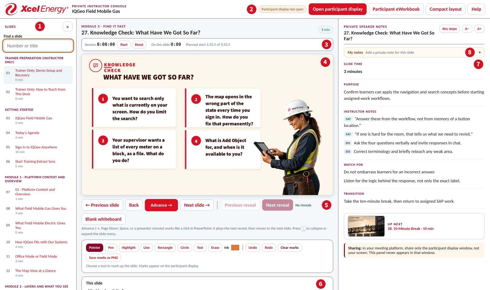
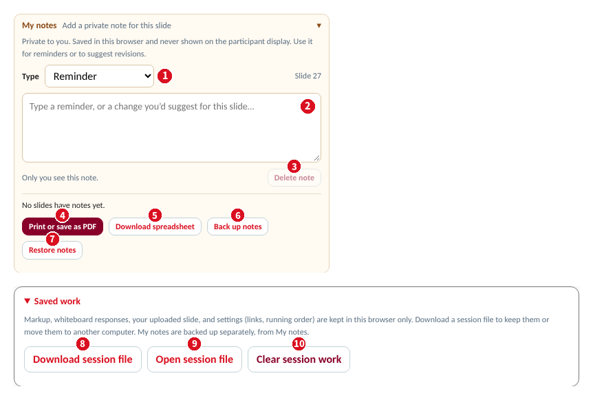

The Instructor Hub is optional. You can teach from the PowerPoint instead. If you use the hub, you run the whole session from one private console while participants see only the participant display.
Allow about 30 minutes the first time, including a practice run in a test meeting, and about 10 minutes before each class after that. Do your setup on the same computer and browser you’ll teach from, and don’t use a private (InPrivate or Incognito) window. Your uploaded slide, settings, markup, and private notes are saved only in that browser. If you have to switch computers, see section 10.
Open the Instructor Hub link in your course email, and sign in if you’re asked to. Use Microsoft Edge or Google Chrome (on a Mac, too).
Select Open the instructor console.
Slides 1 and 2 are trainer-only. They’re marked “Train-the-trainer only” in the PowerPoint, so the participant display shows the course title slide while you’re on them. Read their full text in the speaker notes, or open Trainer-only slides 1 and 2 under Instructor resources. Work through the slide 1 checklist (sign in early, check your work order, pick a demo area) before learners arrive.
Slide 1: check the participant eWorkbook link. The hub fills it in for you; change it only if your eWorkbook is hosted somewhere else. Select Copy link for chat to post it. Slide 61: if you have a feedback or evaluation link, paste it there (slide 60 asks learners to complete a feedback form; no link was supplied with the course).
Slides 28 and 46 (breaks): during class, type the break return time and start the 10-minute timer. The return time appears on the break slide.
2. Open the participant display
Select Open participant display. If nothing opens, allow pop-ups for the site and select it again. The top bar changes to Participant display connected.
This course has no audio or video, so you don’t need Enable sound and video in the participant display.
The participant display shows only slides, reveals, markup, the whiteboard, media, and the activity timer. It never receives speaker notes or your private notes.
3. Arrange your windows
Arrange the two windows before you share, so participants don’t watch you set up.
One monitor, Windows (Snap)
Select Compact layout in the console.
Click the console and press Windows + ←. Click the participant display and press Windows + →.
Collapse the slide menu with « (or press \) for more room. Select » to open it again.
Keep both windows visible. The participant display keeps updating while you work in the console.
One monitor, Mac
Select Compact layout in the console.
Click the console and press Fn + Control + ←. Click the participant display and press Fn + Control + →. These shortcuts need macOS Sequoia (15) or later. You can also hold the pointer over a window’s green button and choose the left or right half, or drag the window edges.
Collapse the slide menu with « (or press \) for more room.
Don’t select Enter full screen on one monitor. On a Mac, full screen moves the participant display to its own space and hides your console.
Two monitors (Windows or Mac)
Keep the console on your main monitor. Drag the participant display to the second monitor and select Enter full screen.
4. Share the participant display
In your meeting platform, choose Share, then Window, and pick the participant display window. Don’t share your whole screen; that would show your notes.
With two monitors, you selected Enter full screen in section 3. On one monitor, leave the participant display in its half of the screen so you can still see the console.
The slides have no audio or video. When you demonstrate IQGeo in the live application, share that window (or your screen) separately, then share the participant display again.
Teaching from a Mac for the first time? Before class day, open System Settings → Privacy & Security → Screen & System Audio Recording (called Screen Recording on older versions) and turn on Microsoft Teams or your meeting app. Then quit and reopen the app. Until you do this, the app can’t share a window.
5. Find your way around the console

The console on slide 27, in Wide layout. Compact layout stacks the same areas.
Slide menu. Search under Find a slide (top of the menu). Tags show reveals, timers, eWorkbook *, and My note. « collapses it.
Top bar.Open participant display, Participant eWorkbook, Compact layout, and Help (this guide).
Clocks. Session clock, the On this slide clock, and whether you’re ahead of or behind plan.
Slide preview. Exactly what participants see. The markup tools sit below it. Blank whiteboard gives you an empty page; its writing stays with the whiteboard, so Return to slide shows the slide without it.
Advance and Back, plus slide and reveal buttons.
This slide. Controls for the current slide only: links, the break return time, and the eWorkbook activity marker. Scroll down in the center column to see it.
Speaker notes.Key steps, A−, and A+ are at the top. Notes are tagged SAY, DO, ASK, DEMO, and LOOK FOR.
My notes. Your private note for this slide (section 8).
6. During class
The hub is built so you can run the session on your own. A producer or co-host is optional; see section 7 if one is helping you.
Task
How
Advance (like a PowerPoint click)
Advance →, →, Space, or Page Down. Most presenter remotes work.
Go back
Back, ←, or Page Up.
Reveals
This course has no click reveals. Each Advance moves to the next slide. (On slide 43 one screenshot appears instantly as the slide opens in PowerPoint; the hub shows it already in place.)
Jump to a slide
Select it in the slide menu, or search by number or title under Find a slide.
Shorter notes
Select Key steps at the top of the speaker notes. Slide time, instructor notes, and the transition stay in place; Purpose, Materials, Expected output, and similar sections fold into More for this slide. Select Show all notes to return. The hub remembers your choice.
Chat
The notes for this course have no ready-made chat messages. Type your own when the notes ask you to post in the chat (for example, the training URL on slide 5 and the break return time on slides 28 and 46). All chat text under Instructor resources lists these steps.
Markup
Choose Pen, Highlight, Line, Rectangle, Circle, or Text and draw on the slide preview. Blank whiteboard gives a clean page. Pointer stops drawing.
Activity timer
The notes ask for a timer on every Your turn slide (16, 22, 26, 33, 41, 45, 51, and 57). Set the minutes (or Use slide time, which matches the notes on those slides), then Start. Uncheck Show on participant display to keep the countdown private.
eWorkbook activities
Slides marked eWorkbook * in the menu (27 and 57) have a matching activity in the participant eWorkbook. Participants’ answers stay on their own devices.
Clocks
The session clock has Start, Pause, and Reset. The On this slide clock turns red when you run over, and the hub tells you whether you’re ahead of or behind plan.
Notes text size
A− and A+ in the notes panel.
On a Mac
Arrow keys, Space, and \ work the same. For Page Up and Page Down, press Fn + ↑ or Fn + ↓.
7. If a producer or co-host is helping you
Some courses include producer steps in the notes, such as opening breakout rooms. Without a producer, you do those steps yourself.
The hub doesn’t connect two computers, so your co-host can’t see your console. Instead, your co-host opens their own copy of the console: the same Instructor Hub link, on their own computer, then Open the instructor console. Each console moves only when its own user moves it. Agree on one of these ways to work before class:
Who shares the slides
You (the instructor)
Your co-host
You share (most common)
Open the participant display and share it, as in sections 2–4. Advance as usual, and say the slide number when you jump ahead or back.
Don’t open a participant display. Follow along in the slide menu, post the chat messages (Copy for chat), run breakout rooms if the course uses them, and watch the time.
Co-host shares
Don’t open a participant display. Read your notes in your own console and say “next” when you’re ready to advance.
Open the participant display and share it, as in sections 2–4. Select Advance when you say “next,” and start timers on the display.
In both, only the person sharing opens a participant display. Only their markup, timers, and break return time appear to participants, so whoever shares should do the setup in section 1. Your co-host can also post messages from All chat text (Instructor resources), which lists every message in slide order with the links already filled in, or follow the speaker notes in the source PowerPoint (Instructor resources).
Test a handoff in your practice run. If your connection drops or you need a hand, your co-host may need to take over. Try two options: your co-host shares the participant display from their own console (with the section 1 setup done on their computer too), or, while you share, you give your co-host control (Give control in Teams, Remote control in Zoom) so they can press → or Space in your shared window to advance the slides. Rely only on an option that worked in your test.
8. My notes: private notes on each slide

My notes (1–7) and Saved work (8–10).
Open My notes at the top of the speaker notes panel. Choose a Type (1): Reminder, Suggested revision, Content update, Timing, or Technical issue. Then type in the box (2). It saves as you type. Delete note (3) removes it.
Slides with a note show a My note tag in the slide menu. Notes stay in this browser and never appear on the participant display.
Print or save as PDF (4) makes a report with each slide picture. Download spreadsheet (5) saves a CSV file that opens in Excel.
After class: download your notes for your own records (PDF or spreadsheet). If any note needs a fix before the next delivery, such as a suggested revision, content update, timing problem, or technical issue, email the PDF report (preferred) or the spreadsheet to design-team@example.com (replace with your design team’s address) for the next round of revisions.
Back up notes (6) and Restore notes (7) move your notes to another computer (section 10).
9. Audio and video
This course has no embedded audio or video. The live demonstrations happen in the IQGeo application, not in the hub.
10. Save your work and switch computers
Everything you set up is saved in the browser you used, and nowhere else.
What
How to keep it or move it
Your links, break return time, and markup
Open Saved work (below the slide) and select Download session file (8). Open session file (9) brings everything back.
My notes
In My notes, select Back up notes (6). Restore notes (7) brings them back. My notes aren’t in the session file.
To move your setup to another computer
On the computer you set up on, select Download session file (8). If you have My notes, also select Back up notes (6). Both files go to your Downloads folder.
Move the files to the other computer, for example by emailing them to yourself.
On the other computer, open the Instructor Hub link in Edge or Chrome (not a private window) and select Open the instructor console.
Select Open session file (9) and choose the session file. For My notes, select Restore notes (7) and choose the backup file.
Check that slides 1 and 61 show your links.
Clear session work (10) removes markup, whiteboard responses, and timers. It keeps your settings and your private notes.
A private window, or clearing your browser history or data, erases everything the hub saved in that browser.
11. If something goes wrong
The participant display stopped updating: click into it once, or close it and select Open participant display again. It returns to the current slide.
Pop-up blocked: allow pop-ups for the site in the browser’s address bar.
Your setup is missing: you may be on a different computer or browser, or in a private window. Open your session file and restore your notes (section 10), or redo the steps in section 1.
The hub won’t load: present the source PowerPoint (Instructor resources) and teach from its speaker notes. Skip slides 1 and 2, which are trainer-only.
Participants can’t open the eWorkbook: post the eWorkbook link again (slide 1). No participant handouts were supplied, so the slides and your narration carry the session.